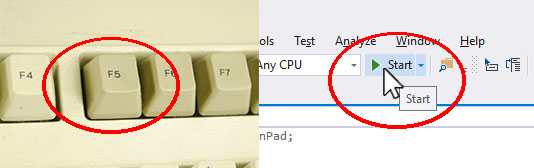
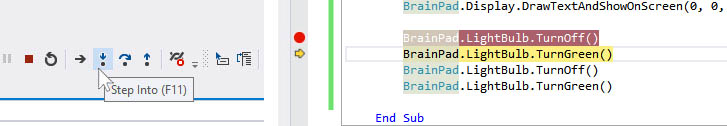

Introduction to Visual Basic
Visual Basic is a modern .NET programming language. It is as powerful as any of the other programmign languiages but its code is more englich-like, making it a student/teacher favorite.
The courses are in the process of being created. Please bear with us.
Overview
Students will learn how to create projects in Visual Studio along with programming basics. Applications in this lesson will be limited to the BrainPad object, If statements, a While loop and the template functions.
Install Visual Studio and TinyCLR OS extension
Skip this step if you have Visual Studio 2017 and the TinyCLR OS extension installed:
Setting Up Visual Studio for the BrainPad
Guidelines
- Prerequisites: None
- Ages 6 and up
- PC setup with Visual Studio 2017 and TinyCLR OS extension installed. Click Here
- Supplies: BrainPad and microUSB cable.
Starting a New Visual Basic Project
Connect your BrainPad to your computer using a microUSB cable.
Next Open Visual Studio select File > New > Project and under Other Languages select Visual Basic > TinyCLR and choose the BrainPad Application. Change the Location to C:\Users\<YourUsername>\Desktop\ then name the project BrainPad_Project.

Once created, you'll be presented with a Program.vb tab.

This file contains the default code when you first create a project. The lines in green that begin with ' are called comments, and they generally describe what the code does. Take a moment to review them. You can create your own comments in the code by typing ' before any notes you like to add. Comments don't affect how your program runs.
Comments are a great place to keep notes about how a piece of code might work. They are helpful if another programmer looks at your code, or you return to look at your own code at a later date, to help you understand what the code is doing behind the scenes.
Let's run the code to see these comments' descriptions come to life. Connect the BrainPad and press the F5 function key or the Start button in Visual Studio's toolbar.

Visual Studio will now run the code, a few things will happen and the display will now have the text "Hello!".

What happened exactly? Our application began by calling the BrainPadSetup() function. This function is called one time, when the application starts, and is generally used to set things up. In this case, it executed the
BrainPad.Display.DrawTextAndShowOnScreen(0,0,"Hello!")line instructs the display to show the text "Hello!" After BrainPadSetup() was finished, the application called BrainPadLoop(). Code placed inside this method is executed in an infinite loop. This is why the code that turns the LED on and then off again never stops.
The BrainPad Object
The world around us is full of objects. Every person, table or circuit board is an object. If we were to ask a person to say "hello," we'd be asking an object to perform a task. The same concept can be applied to code, specifically object-oriented programming. Like in the previous application we ran, the BrainPad was asked to control the Display through the BrainPad object.
The BrainPad object itself, is a piece of code that is contained in one file. This was developed by GHI Electronics to cover the internals of the BrainPad. This enables students like you, with an easy way to control the BrainPad circuit board.
After typing BrainPad, press the period key to get a list of all available options for this object, like LightBulb. As shown in the image below.

Now we can use the arrow keys to go up and down in the list to find the LightBulb, and then press the period key again to see what options are the available for the LightBulb.

Visual Studio does a great deal of simplifying the programming process by automatically listing available options for an object. They call this neat option built into Visual Studio, IntelliSense
Now that we know how to use the BrainPad object, let's learn about controlling the LightBulb.
The BrainPad LightBulb
LED lights are used in many different electronic devices. Here we will test the LightBulb by turning it on green, then turning it off.
Copy and paste the code from the example below into your project's `BrainPadSetup()
BrainPad.LightBulb.TurnOff()
BrainPad.LightBulb.TurnGreen()
BrainPad.LightBulb.TurnOff()
BrainPad.LightBulb.TurnGreen()
Now, press F5 on the keyboard or the Start button in Visual Studio to run the code and you'll see the LightBulb turn green come on and stay on.
This happens because our code is executed faster than we can see. So we never see the LightBulb actually blink.
Problem Solving
Since applications execute extremely fast, we need to slow them down to figure out the problem. This way we can see what is happening or if the results are as expected. We will start by running the code one line at a time, this is called stepping in code to see what the application does at a slow speed.
Stepping in Code
With Visual Studio we can "step" through the code executing each line separately one at a time. This will help when you're trying to debug a problem. To do this we need to add what is called a breakpoint or (stop point).
A breakpoint is a spot in your program where the code will execute until it reaches the breakpoint, then Visual Studio will wait for further instructions.
To add a breakpoint at the first line of code inside of BrainPadSetup() moving the cursor to that line and pressing the F9 key as shown below. A red circle will appear to the left of your code. This is where your code will stop and wait.
You can also click in the grey area where the breakpoints appear to either remove or create new breakpoints. Your program can have as many breakpoints as you feel necessary to diagnose any programming issues.

Press F5 key or Start button in Visual Studio to run the application. The project will be built and deployed but then the execution will stop at the breakpoint as shown below.

Once a program reaches a breakpoint it pauses the program, right where it is in the code, as noted by the yellow arrow now in the red circle. You have several options to continue or step through you code line by line, while the program is still running.
If you press the Continue button in the top tool bar of Visual Studio as shown below. Your program will continue, to the end of the code or the next breakpoint.

To the right of the Continue button are more buttons for navigating the code while the program is running. Unlike the Continue button, the Step Into button or F11 key advances your program one line of code at a time. This can be very useful when trying to diagnose programming errors.

Adding Delays to Code
In order to see what's going on we need to add some delays in the program code. This is done by telling the BrainPad to Wait between tasks.
Copy and paste the code from below into your project's BrainPadSetup()
BrainPad.LightBulb.TurnOff()
BrainPad.Wait.Seconds(1)
BrainPad.LightBulb.TurnGreen()
BrainPad.Wait.Seconds(1)
BrainPad.LightBulb.TurnOff()
BrainPad.Wait.Seconds(1)
BrainPad.LightBulb.TurnGreen()
Run the code by pressing F5 key or Start button in Visual Studo and observe the LightBulb again. You should now see it turn green, then on and off twice.
Change the LightBulb Color
This works great if you only want the LightBulb green. But what if you want a different color? The LED inside the LightBulb is capable of showing more colors than just green. LED TV's use many tiny LEDS lined up in rows and columns to make up the picture you see. Like the LED lights in a TV they are capable of showing many different colors inside just one LED. First let's use code similar to the last example, only this time will change the LightBulb from green to red to blue, using built-in methods already created.
Copy and paste the code from below into your project's BrainPadSetup()
BrainPad.LightBulb.TurnOff()
BrainPad.LightBulb.TurnGreen()
BrainPad.Wait.Seconds(1)
BrainPad.LightBulb.TurnOff()
BrainPad.LightBulb.TurnRed()
BrainPad.Wait.Seconds(1)
BrainPad.LightBulb.TurnOff()
BrainPad.LightBulb.TurnBlue()
BrainPad.Wait.Seconds(1)
Even more LightBulb Colors.
Under the BrainPad.LightBulb object you'll find the method BrainPad.LightBulb.TurnColor(). The TurnColor(r,g,b) method takes three arguments which describe the color of the light bulb. The first argument tells the light bulb how much red to use, the second how much green, and the third how much blue. Each number is a percentage, or a number from 0 to 100 with 0 being off and 100 being full brightness.
BrainPad.LightBulb.TurnColor(100, 100, 100)
We'll now redo the code above that turns the light from Green to Red to Blue. But this time we'll use the TurnColor() method to achieve the exact same results.
Copy and paste the code from below into your project's BrainPadSetup(), between the two curly braces { }.
BrainPad.Display.DrawTextAndShowOnScreen(45, 0, "Red")
BrainPad.LightBulb.TurnColor(1, 0, 0)
BrainPad.Wait.Seconds(2)
BrainPad.Display.DrawTextAndShowOnScreen(35, 8, "Green")
BrainPad.LightBulb.TurnColor(0, 2, 0)
BrainPad.Wait.Seconds(2)
BrainPad.Display.DrawTextAndShowOnScreen(40, 16, "Blue")
BrainPad.LightBulb.TurnColor(0, 0, 5)
BrainPad.Wait.Seconds(2)
BrainPad.Display.DrawTextAndShowOnScreen(29, 24, "Yellow")
BrainPad.LightBulb.TurnColor(10, 10, 0)
BrainPad.Wait.Seconds(2)
BrainPad.Display.DrawTextAndShowOnScreen(41, 32, "Cyan")
BrainPad.LightBulb.TurnColor(0, 20, 20)
BrainPad.Wait.Seconds(2)
BrainPad.Display.DrawTextAndShowOnScreen(25, 40, "Magenta")
BrainPad.LightBulb.TurnColor(50, 0, 50)
BrainPad.Wait.Seconds(2)
BrainPad.Display.DrawTextAndShowOnScreen(37, 48, "White")
BrainPad.LightBulb.TurnColor(100, 100, 100)
BrainPad.Wait.Seconds(2)
BrainPad Buzzer
Included on your BrainPad is a Buzzer. You can use this Buzzer to program different sounds you'd like to use in your program. Like the BrainPad.LightBulb object, you'll also have to tell the Buzzer object to Beep, StartBuzzing and StopBuzzing. Will also tell the BrainPad to Wait in between playing and not playing as sound. When you tell the BrainPad to Wait, the sound will play for that duration.
Copy and paste the following code into your BrainPadSetUp(). Press F5 key or Start button in Visual Studio.
BrainPad.Buzzer.StartBuzzing(100)
BrainPad.Wait.Seconds(1)
BrainPad.Buzzer.StopBuzzing()
You should hear a very low tone, that plays for one(1) second and stops.
Inside the BrainPad.Buzzer.StartBuzzing(100) method you'll see that in the code we've added the value of 100. This is the frequency of the sound that will be played by the Buzzer. You can change this value to create a bunch of different sounds. Let's try changing it.
Copy and paste the following code into your BrainPadSetUp(). Press F5 on the keyboard or Start on the Visual Studio toolbar.
BrainPad.Buzzer.StartBuzzing(400)
BrainPad.Wait.Seconds(1)
BrainPad.Buzzer.StartBuzzing(100)
BrainPad.Wait.Seconds(1)
BrainPad.Buzzer.StopBuzzing()
First you'll hear the Buzzer make a very high sound, then a very low sound. This is what changing the frequency does to the Buzzer.
Try changing the frequency to different values and see what kind of sounds the Buzzer makes.
BrainPad Buttons

The BrainPad comes with four buttons (Up, Down, Left & Right) that can be programmed to do different things. Such as when a button is pressed the LightBulb turns on or the Buzzer makes a sound.
To accomplish this we need to use what is called an "if statement"
An if statement that will check and see if our buttons are being pressed and then execute a piece of code when they are.
If Statement
If condition Then
Execute this code;
Else
Execute this code;
End If
An if statement (or conditional statement) checks to see if a statement is true or false and then does one of two things depending on the result. The example above shows the framework of the if statement within Visual Basic.
Now we'll use the same structure in our code to detect the LEFT button being pressed.
Public Sub BrainPadSetup()
If BrainPad.Buttons.IsLeftPressed() Then
BrainPad.LightBulb.TurnGreen()
End If
End Sub
For the above code to work properly, you have to be holding the button down at the time the program starts. This is because the code within the BrainPadSetup() method only executes once. When the program is first started. Holding down the Left button when the program starts is impractical and not very useful to a program. We need to be able to press & read the button anytime the program is running. To do this we will move the button checking if statement inside the BrainPadLoop() method instead of the BrainPadSetup()
Public Sub BrainPadSetup()
BrainPad.LightBulb.TurnOff()
End Sub
Public Sub BrainPadLoop()
If BrainPad.Buttons.IsLeftPressed() Then
BrainPad.LightBulb.TurnGreen()
End If
End Sub
The above code first makes sure the Light Bulb is OFF and then it falls into an infinite loop, called the BrainpadLoop(). However, this program still has an operational bug. Run the program and test it. The green light will be off when the program runs and then once the LEFT button is pressed the green light will turn on. That is all good so far, but when the button is released, the green light stays on. Can you guess why? Try stepping in the code to see what happens when the button is pressed and when it is not pressed.
Computers are strict at following orders. In the previous examples, the Light Bulb never turned off because we actually never told the program to turn the green light off. This means we have to tell the program to turn the light on when the button is pressed and we also have to tell it to turn the light off when the button is not pressed
Public Sub BrainPadSetup()
BrainPad.LightBulb.TurnOff()
End Sub
Public Sub BrainPadLoop()
If BrainPad.Buttons.IsLeftPressed() Then
BrainPad.LightBulb.TurnGreen()
End If
If Not BrainPad.Buttons.IsLeftPressed() Then
BrainPad.LightBulb.TurnOff()
End If
End Sub
The keywords If Not before the BrainPad.Buttons.IsLeftPressed() , represents if the button is not pressed. Now when you run it, not pressing the button will turn/keep the LightBulb off.
Else Statement
The else statement is always used with the if statement and has a very useful purpose that would be perfect for the last example. In the previous code example, we needed to check if the Left button was being pressed or not. We can simplify this by catching when an if statement isn't true using else as shown in the code below.
Public Sub BrainPadSetup()
BrainPad.LightBulb.TurnOff()
End Sub
Public Sub BrainPadLoop()
If BrainPad.Buttons.IsDownPressed() Then
BrainPad.LightBulb.TurnGreen()
Else
BrainPad.LightBulb.TurnOff()
End If
End Sub
The Else-If Statement
The else-if statement closely resembles the else statement but works like both an if statement and an else statement together. Unlike the else statement by itself, the else-if statement checks to make sure its condition is true before executing the code below its statement, rather then just executing it by default.
An example of the similar code as earlier but using an "else-if statement" instead.
Public Sub BrainPadSetup()
BrainPad.LightBulb.TurnOff()
End Sub
Public Sub BrainPadLoop()
If BrainPad.Buttons.IsLeftPressed() Then
BrainPad.LightBulb.TurnGreen()
ElseIf BrainPad.Buttons.IsRightPressed() Then
BrainPad.LightBulb.TurnRed()
Else
BrainPad.LightBulb.TurnOff()
End If
End Sub
Logical Operators -- And & Or
These are typically used within the if statement. Let's assume in our previous example you wanted to press the Left button to make the LightBulb Green and when you press the Right button you want to make the LightBulb Red. If neither button is pressed the LightBulb is off. To accomplish this you'll need to use the key word And to check and make sure both buttons are Not pressed, and turn off the LightBulb.
In the code example below, in our third if statement, you can see where we ask the question, "Is the Right button pressed And is the Left button pressed?" Both of these condition must be met in order to execute the code below the statement. When using the Or keyword, only one of the conditions need to be met to run the code below the statement.
Public Sub BrainPadSetup()
BrainPad.LightBulb.TurnOff()
End Sub
Public Sub BrainPadLoop()
If BrainPad.Buttons.IsLeftPressed() Then
BrainPad.LightBulb.TurnGreen()
End If
If BrainPad.Buttons.IsRightPressed() Then
BrainPad.LightBulb.TurnRed()
End If
If BrainPad.Buttons.IsLeftPressed() And BrainPad.Buttons.IsRightPressed() Then
BrainPad.LightBulb.TurnOff()
End If
End Sub